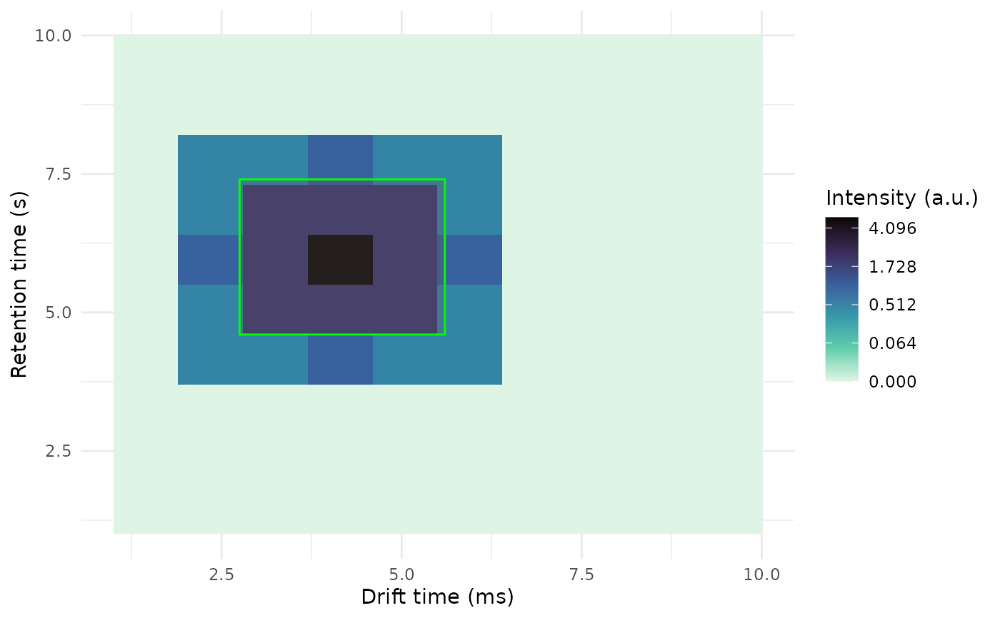

add_peaklist_rect.RdAdd peak list rectangles to a raw plot
add_peaklist_rect(
plt,
peaklist,
color_by = NULL,
col_prefix = "",
pdata = NULL,
palette = P40
)The output of plot() when applied to a GCIMSSample
A data frame with at least the columns: dt_min_ms, dt_max_ms, rt_min_s, rt_max_s
and optionally additional columns (e.g. the column given to color_by)
A character with a column name of peaklist. Used to color the border of
the added rectangles
After clustering, besides dt_min_ms, we also have
A phenotype data data frame, with a SampleID column to be merged into peaklist so color_by can specify
a phenotype
freesize_dt_min_ms. Use col_prefix = "freesize_" to plot the freesize version
A character vector with color names to use drawing the rectangles. Use NULL to let ggplot2 set the defaults.
The given plt with rectangles showing the ROIs and crosses showing the apexes
If peaklist includes dt_apex_ms and rt_apex_s a cross will be plotted on the peak apex.
dt <- 1:10
rt <- 1:10
int <- matrix(0.0, nrow = length(dt), ncol = length(rt))
int[2, 4:8] <- c(.5, .5, 1, .5, 0.5)
int[3, 4:8] <- c(0.5, 2, 2, 2, 0.5)
int[4, 4:8] <- c(1, 2, 5, 2, 1)
int[5, 4:8] <- c(0.5, 2, 2, 2, 0.5)
int[6, 4:8] <- c(.5, .5, 1, .5, 0.5)
dummy_obj <-GCIMSSample(
drift_time = dt,
retention_time = rt,
data = int
)
plt <- plot(dummy_obj)
# Add a rectangle on top of the plot
rect <- data.frame(
dt_min_ms = 2.75,
dt_max_ms = 5.6,
rt_min_s = 4.6,
rt_max_s = 7.4
)
add_peaklist_rect(
plt = plt,
peaklist = rect
)
#> Warning: `add_peaklist_rect` is deprecated
#> ℹ Replace `add_peaklist_rect(plt, peaklist)` with `plt +
#> overlay_peaklist(peaklist)` instead
